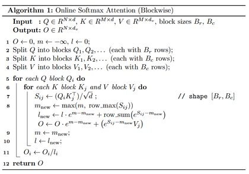
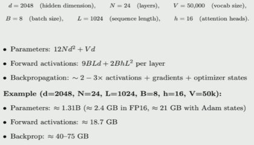

用 pilog 搭建像素风博客
一套轻量的静态博客框架：读取 blogs/ 目录下的 Markdown，生成卡片 / 清单 / 图谱三种视图，主题复刻 Chrome 断网页的像素美学。
一套轻量的静态博客框架：读取 blogs/ 目录下的 Markdown，生成卡片 / 清单 / 图谱三种视图，主题复刻 Chrome 断网页的像素美学。
这份速查表展示了本博客支持的 Markdown 能力，同时也用于演示引用关系： 更多能力（目录、表格、代码高亮等）由 pilog 框架说明 介绍。
把 blogs/ 目录直接作为 Obsidian 仓库打开，就能获得双向链接、图谱视图等本地能力。 新建文件默认位置：当前文件夹； 附件默认保存位置：assets； Wiki 链接格式：最短路径。 这样拖进来的图片会自动落到 blogs/assets/，写作时用 ![[图片名.png]] 引用，构建时 pilog 会原样解析。 博客框架本身的细节，可以看 [[pixel-blog]]。 在 front matter 里可以手动指定 preview，卡片视图会优先展示它（支持 Markdown…
主页右下角藏着一只 Chrome 断网页小恐龙。点开它，就可以在写博客的间隙跑两步： 空格 / ↑：跳跃 ↓：下蹲（空中可急降） Enter：重新开始 游戏整体复刻了 Chromium 官方的像素配色与手感，也定义了本站的视觉语言：灰白底、锐利直角、没有多余的圆角。 想直接玩，点这里：开始游戏。
图谱节点已经加大，可以容纳更长的标题；当标题仍然超出节点宽度时，末尾会用 ... 截断，悬停节点可以看到完整标题。 这篇示例本身没有更多内容，它的任务已经完成了。
总结：FlashAttention用于降低Attention计算阶段预存的显存消耗（内部计算范畴）， PagedAttention用于高效管理推理的KV Cache（外部推理范畴）。 FlashAttention： 问题：标准 Attention 需要存储 N×N 的中间矩阵，显存 O(N²) 解决：分块 + 在线 softmax，显存降到 O(N) 关键：外循环 Q 块，内循环 K、V 块，在线更新 m、l、O PagedAttention： 问题：预分配连续显存导致大量浪费（内部碎片 + 外部碎片）…

因为想学一下低音谱号，顺便再多熟练熟练不熟悉的高音谱号的读谱，所以做了个小玩具出来。 把谱面难度调低还挺好玩的 → notegotya
撰写了原始的softmax、数值稳定的softmax、在线softmax的公式及其简单代码呈现。 我们讨论的起点是原始的softmax形式： $$pj = \frac{e^{zj}}{\sumk e^{zk}}.$$ 为保证数值稳定，令 m := \maxk zk, 则 softmax 可等价改写为数值稳定的softmax形式： pj = \frac{e^{zj - m}}{\sumk e^{zk - m}}. 其实就是给分子分母的 $z$ 先减去 $m$ ，然后再使用exp函数，相当于给 $pj$…
在线阅读： MLSys 中文翻译 搞到网页上方便阅读。 原网页链接： MLSys 课程名称：复旦大学2025-2026春机器学习系统课程（尚笠老师）
Allow env::... for objectstorage.endpoint by Meredith2328 · Pull Request #6949 · tensorzero/tensorzero 感悟：对ai工作流的优化 codex用于处理环境配置等耗时的问题，并且负责整理整体代码结构（慢）， deepseek用于快速问答、给我讲解我要做什么（快）。 crates/tensorzero-core/src/config/mod.rs 这里从原来的 config 必须字面写出 endpoint…
本部分适合于知道AdamW更新流程、但没有尝试推导过peak memory和计算量、计算时间的朋友。 A{per\layer} ≈ 9BLd + 2BhL^2 C ≈ 6 × P × D Problem (adamwAccounting): Resource accounting for training with AdamW 接下来我们计算一下使用AdamW需要多少内存和计算。tensor一律使用float32。 (a) 运行AdamW的peak memory是多少？…
